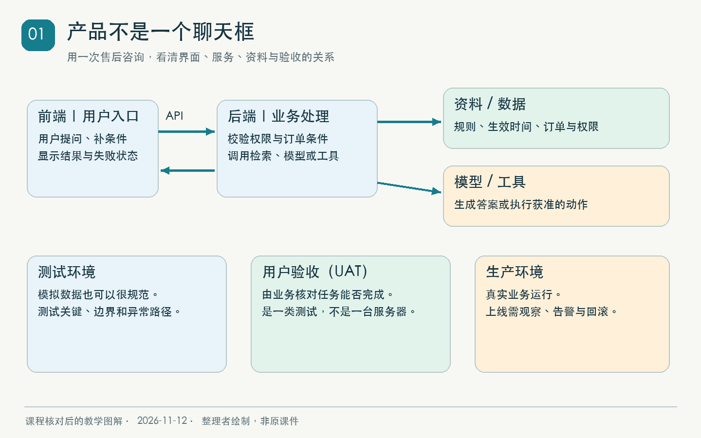

MAP / 先看完整路径
怎样使用
先顺着 1 → 6 看流程，再点击任意步骤进入演示。每步同时看“做什么、留下什么、容易错在哪里、怎样验收”。
实际项目里，这些步骤经常来回往返，不必死板按顺序走。页面里的案例都是虚构的教学示例。

图解为学习示意。
完整实操 SOP
可以用键盘左右方向键前后切换，也可以点左侧的步骤直接跳过去。
CHECK / 先判断，再看解释
工具超时后应该如何处理？
带走一张实操卡
内容只在当前页，刷新不保存；下载不会提交给老师，也不会改写课程笔记。
ORAL NOTES / 主线外也要记
老师口头补充与游离知识点
- 10/24 P0357–P0370：操作前预期、过程中反馈、失败后恢复。
- 10/24 07:30:37–07:31:17：生成不等于发布。
- 10/25 P0263–P0264：激活字段在中间节点丢失。
括号里是课程日期和录音时间点，方便回去查原话。内容是按录音整理的要点，不是逐字原话。
来源与公开范围
公开版来源与阅读边界 ↗公开版来源与阅读边界 ↗本页把课程内容按操作步骤重新组织。想看课堂上的完整语境，请看按日期整理的笔记。课程里的观点不等于已核实的事实；涉及平台规则和参数的，用之前再查一遍。